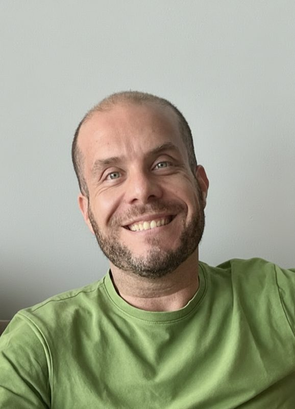
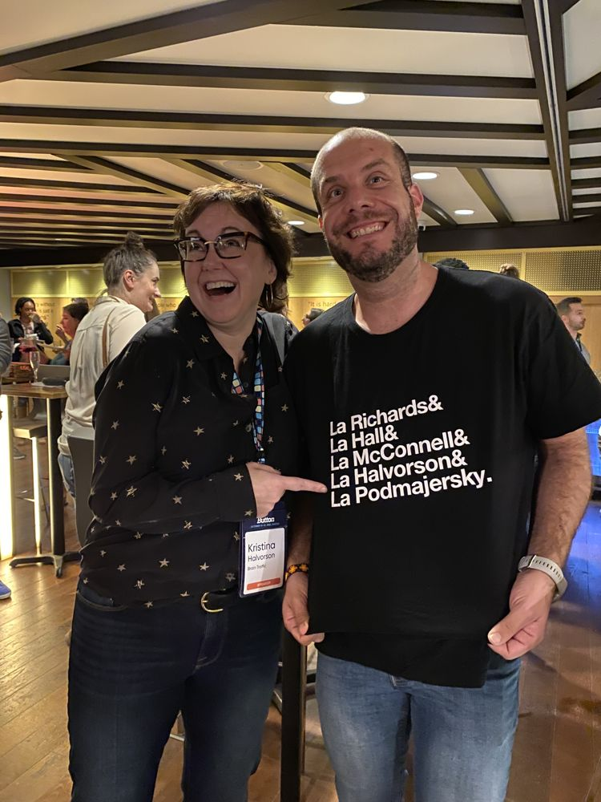
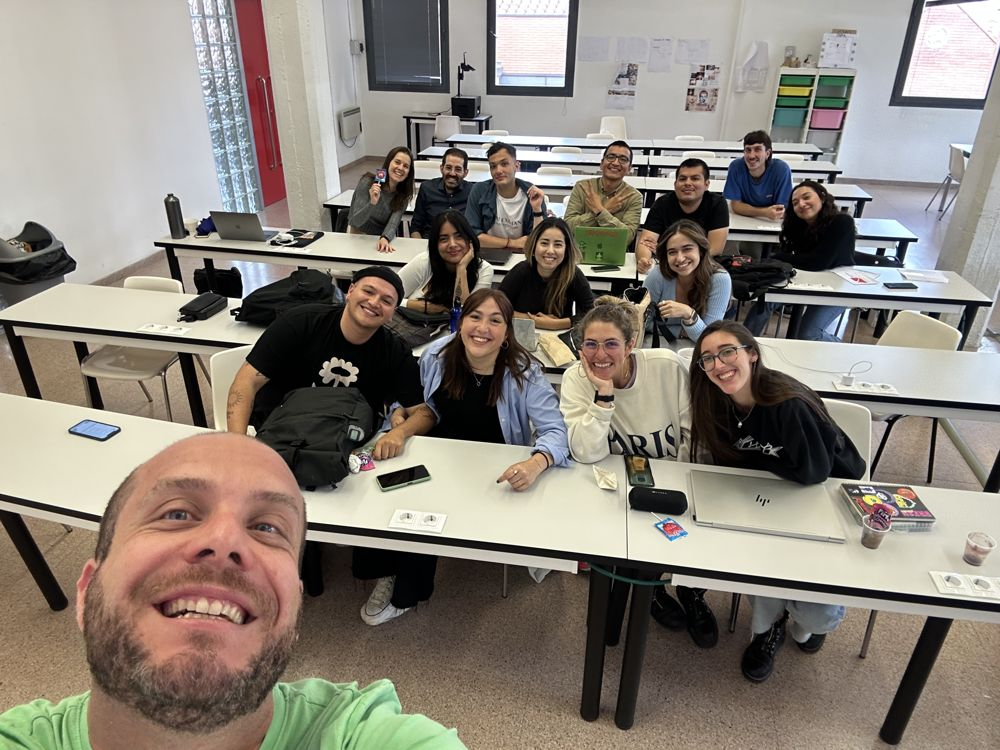
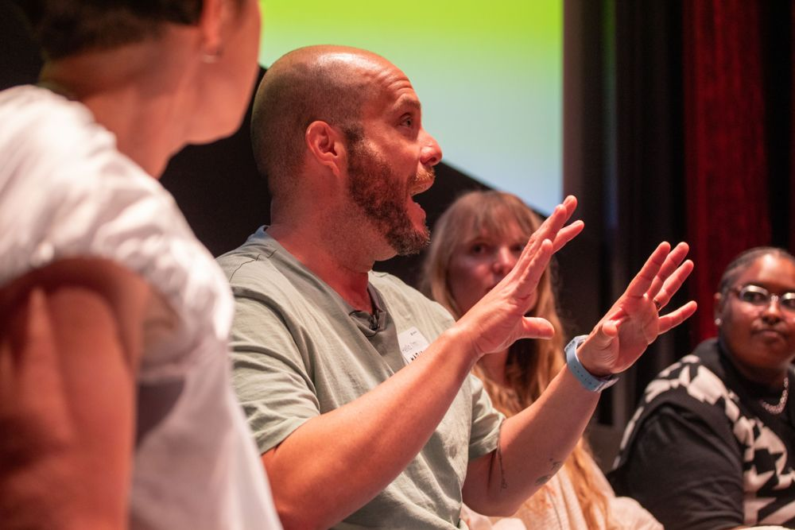
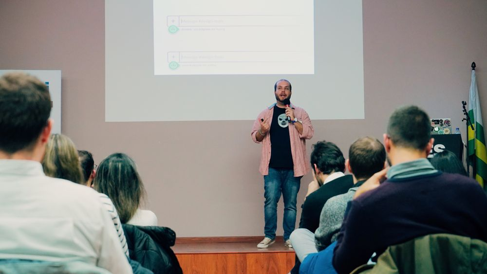
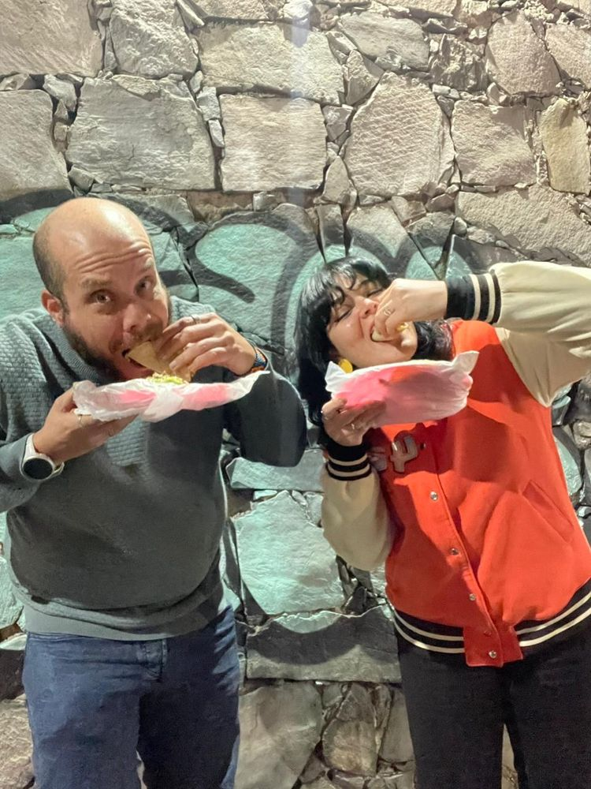

Hola 👋🏼
Soy Mario
I was born in Guadalajara, Mexico, and moved to Barcelona in my twenties. Barcelona's home now, but part of me is always halfway back to a taco stand in Guadalajara. I speak Spanish, English, and enough French and Catalan to get by, and I've never quite stopped noticing how much gets lost, or found, in the space between languages.
I started out as an advertising copywriter in Mexico, and made the jump into content design after landing in Barcelona. Early at King, a designer stopped me mid-sentence while I was writing an onboarding flow the way I used to write ads: one message, dramatic, precious. He said something like, if you want to tell a story, go write a book. This isn't a book. It's a flow. That's the moment I fell in love with product design. I stopped treating words like a finished product and started treating them like part of a system, one that guides people through an experience.
A few years in, I didn't know anyone else doing this work in Spain, so I started Content Design España. Seven years and a lot of mentorships, workshops, and job referrals later, it's still one of the things I'm proudest of. Not because I built something, but because a bunch of people stopped feeling like the only content designer in the room.
Along the way I've worked with teams across Europe, the US, Canada, and Latin America. Different languages, different cultures, different ways of disagreeing. It turned out the noticing I do between languages works on people too: most of design is translating between the people you build for and the people you build with.
These days, one problem space keeps pulling me in. Good content design comes from the judgment and taste experience gives you, not tone of voice guidelines. AI raised the stakes on that idea: what you name things, how you structure knowledge, and what a system remembers now shape how it thinks and acts. So beyond writing prompts, I've been designing the context AI agents run on, trying to carry that judgment forward instead of just enforcing rules. Still figuring it out, but it feels like the right problem to be working on.
Outside of work, I teach, chase the best tacos in town (DM me your faves), and shoot photos on film cameras older than some of my students. When I'm not doing any of that, you'll find me at crossfit or out on a trail run.






Lo mío (professionally speaking)
Tacos, content design, or both. Always up for a chat.